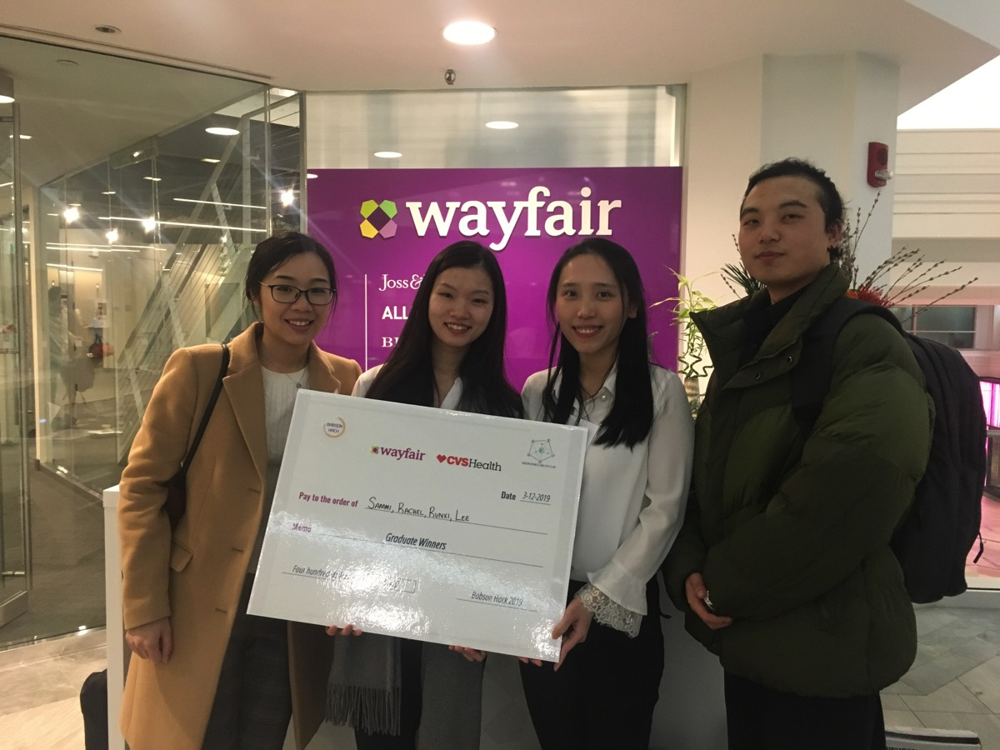
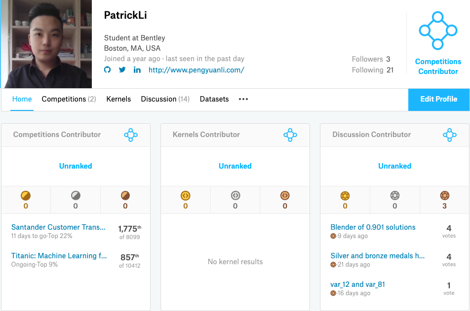

Wayfair Analytics Competition
Overall Champion
Feb 2019 – Mar 2019
Project description
- Collaborated with teammates to define the problem, search information and set a timeline for the one-month competition.
- Performed customer segmentation with random forest and unsupervised learning model (k-means & k-prototype).
- Performed feature engineering and generated a new feature according to demand to improve the model performance.
- Created data visualization graphs with Python and Tableau on EDA and final presentation.
- Imputed data from external data source.
- Provided data-driven solutions to improve the Wayfair’s website banner’s effectiveness.
- Won the championship at Wayfair’s headquarter on Tuesday, March 12, 2019.
Find more info here (codes, documents): https://github.com/lipengyuan1994/BabsonHack

Kaggle Competition
